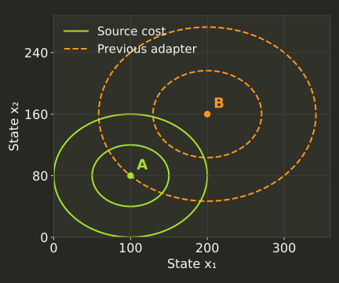
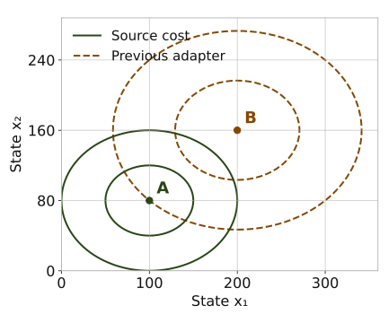

Match the source terminal cost
A factor of two in a quadratic interface changes the preferred terminal state. These saved Lotka and fuel queries isolate the native adapter correction in issue #980.
The mathematical interface
JT(x) = (x − r)ᵀD(x − r) = ½xᵀQx + qᵀx + c, with Q = 2D, q = −2Dr and c = rᵀDr.
r =
D =
Q =
q =
For this Lotka task, r is a 2 × 1 column vector and D and Q are 2 × 2 matrices. The previous adapter supplied Q = D while keeping the full linear and constant terms. Its unconstrained minimum moves to 2r.


Check the native values
Both queries start at a source target state and solve only the final remaining decision with the original horizon normalization. They are diagnostic queries, not full episodes. The before and after queries return the same final state in each task.
| Task | Previous terminal | Corrected terminal | Source formula |
|---|---|---|---|
| Lotka | -1 | 0 | 0 |
| Fuel | -0.592525 | 0.00155948 | 0.00155948 |
Displayed values use six significant digits; raw records retain binary64 values. The saved source checks compare terminal, running and total components separately. The largest corrected absolute component difference is 3.49e-16.
Historical evidence
The frozen native results at source 64560a03 used the previous polynomial. Their physical trajectories and independently recomputed physical costs remain observations. Preserve those records; use the corrected source identity for new source-cost comparisons. The independent continuous NMPC adapters and the orbit norm adapter use separate constructions.
Source, raw diagnostics and reproduction
Corrected component checks and source hashes · Previous diagnostic summary · Bundle checksums · Offline bundle
- before syn-nl-lv-01 request and native response
- before syn-nl-fuel-01 request and native response
- after syn-nl-lv-01 request and native response
- after syn-nl-fuel-01 request and native response
Corrected capture source: 33f907a0af18e49e52b9c7bbc6f6a49c6dc29d50. The supplied bridge artifact hash is recorded; its exact build revision was unavailable.
At the corrected capture source tag, build the public bridge and capture into a new directory:
cmake -S . -B build-cost -DCMAKE_BUILD_TYPE=Release -DCSL_ENABLE_HIGHS=ON -DCSL_ENABLE_QHULL=ON
cmake --build build-cost --target csl_closed_loop_native_policy -j1
python benchmarks/reporting/closed_loop/terminal_objective_probe.py --bridge build-cost/csl_closed_loop_native_policy --output fresh-cost-diagnostics